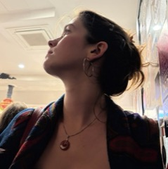

The New Critic is the young American magazine. We publish essays, interviews, and criticism by and for generation z.
Sign up for our free newsletter
or become a paying member.
Hundreds of New Critic readers are paid subscribers. For $30 a year, paid subscribers get access to:
- Postscript, our interview series
- Contra, our criticism section
- Exclusive New Critic parties
The New Critic finds and supports the extraordinary writers of our generation. Competitive pay and creative license make professional writing possible. When you give to The New Critic, you fund the future of letters.
Give a different amount than our subscription rate. Any gift, small or large, supports our work. Donations over $300 receive a lifetime subscription.
We work with fiscal sponsor Fractured Atlas to allow our patrons to make tax-deductible donations, or you can give any amount instantly through Stripe.
Give through Fractured Atlas or Stripe.
If you are interested in writing a check, donating more than $5,000, or have other questions, email editors@thenewcritic.com.
Art Director
Kit Knuppel
A Letter to Our Readers
from the founding editors
June 26
In this era of investment in technological innovation and big ideas, The New Critic believes the same approach to risk should be applied to the world of letters.
We operate in a different sector than the tech sphere — ours is the bazaar of rhetoric, emotion, and ideas — and our mission is not tied to any bottom line. Rather, our magazine is the product of one long conversation, a lasting friendship between our editors, and a dogged pursuit of excellence in the name of beauty and freedom, that liberty to act according to what activates the mind and invigorates the body.
The New Critic is a venture capital firm for writing. We invest resources in the intrepid thinkers, writers, and ideas of our generation.
Cynics see the internet as a scourge on the intellect, a blight that rots our appetite for reading and mutilates our attention. But we believe in the digital as the accelerant of communication, the medium that will allow our generation of writers to be among the greatest that have ever lived.
With a year of notches on our editorial belt, we now have our ambitions and wits about us. We have built up our arsenal of scouts, sharpened our eye for potential, developed our talent, and expanded our public. We are the foremost experts at identifying the extraordinary among our peers, offering talented writers the range, platform, and connections they need to pursue the writing life.
But our venture firm needs capital. The internet is only as good, as disciplined, as exciting as we make it. By giving to The New Critic, you are investing in young writers before embitteredness, intimidation, and embourgeoisement can overtake their ideals. You are allowing The New Critic to be a patron, to pay our writers more competitive rates, send them on more ambitious assignments, and create the material conditions required for their work.
With our sights set on these ruthless ends, we ask believers in our project to pledge their faith.
The New Critic Secession
A Manifesto of 42 theses
March 24

Von Bar, NY. Bleecker and Bowery. Friday, March 20, 2026.The New Critic attends the “Lit Mags Party” of The Republic of Letters.At a quarter past nine, we step to the microphone.We are to deliver a manifesto to an uproarious crowd; a manifesto that will announce our secession from all who came before.Seven editors present 42 theses.We print those theses below.
The 42 Theses of Secession
| No. 1 |All of the world’s problems are the creation of our elders.Now they want to make those problems our responsibility.So be it.We will solve all the problems in the world.| No. 2 |We are the establishment establishment,the anti-establishment anti-establishment,the establishment anti-establishment,the anti-establishment establishment.| No. 3 |THE NEW CRITIC is authoritarian.We are authors, and contrarians.| No. 4 |THE NEW CRITIC is the gold standard.THE NEW CRITIC wants your cash.| No. 5 |You were there the day print died.We’ll be there the day print dies again.| No. 6|THE NEW CRITIC is always alive.It will never die.It has always been.It always will be.| No. 7 |Hurl no hate toward the antagonist.
| No. 8 |When you love a woman,that’s THE NEW CRITIC.| No. 9 |THE NEW CRITIC wants to bring the real world to the internetand the internet to the real world.We want to make the two indistinguishable.| No. 10 |We write the world as we experience itand experience the world as we write it.We never leave our rooms.| No. 11 |We see ourselves as both shaped by and reacting againstthe chief moment of our history.September 14, 1982.That was the day of the first issue of USA Today.| No. 12 |The NEW CRITIC writer takes one afternoon to write their storyand 10,000 years to live it.| No. 13 |Write for no audience.| No. 14 |To utilize Substack is to make love to the cyberspace,to find one’s match across the cosmos of doctored user profiles.All writers are virile and attractive.Writing is indicative of other things.Writers always have the blood pumping.So do non-writers.It is the way of things.
| No. 15 |THE NEW CRITIC writer doesn’t write at all;they merely find their stories fully formed in the darkness beneath the earth.| No. 16 |ALL NEW CRITIC writers write with typewriters.| No. 17 |ALL NEW CRITIC writers have nice eyes.| No. 18 |The NEW CRITIC writer doesn’t believe in ideas.They put their faith in the sword.| No. 19 |We write from the heart of darkness to the heart of darkness.The heart of darkness,in other words,is THE NEW CRITIC.THE NEW CRITIC is the heart,of darkness.Darkness is the heart of THE NEW CRITIC.The heart is the darkness of THE NEW CRITIC.The darkness of THE NEW CRITIC is the heart.| No. 20 |We write to get filthy rich and famous.| No. 21 |The divine spirit moves between our sentences.Our sentences are moved by the divine spirit.Our editors move the sentences in our pieces.We are our editors.Our editors contain the spirit of the divine spirit.
| No. 22 |THE NEW CRITIC fashions somethinglasting out of silly internet discourse.| No. 23 |The best writers don’t think.Introspection is not for THE NEW CRITICs.| No. 24 |The internet runs in our veins;we refuse to drain our own blood.| No. 25 |THE NEW CRITIC aims to break you down and build you up.And break you down.And build you up.| No. 26 |THE NEW CRITIC has no resentmenttoward the existing literary institutionsbut also no mercy.| No. 27 |THE NEW CRITIC stands among all of us.We are THE NEW CRITIC.We stand before you.| No. 28 |The gen z NEW CRITIC writer is not “political”in the way that Gawker was politicaland not “not political”in the way that The Free Press is “not political.”
| No. 29 |THE NEW CRITIC is all about the old critics.We are writers.We are birds looking at the frozen seaand flying past the frozen sea.We seek warmth,the heat of summer.We leave the axing of the sea to others,to those who can lift the axe.| No. 30 |The gen z essayist is aware of their traditionand has read their Honor Levy,Emily Sundberg,Dean Kissick,Sam Kriss,Becca Rothfeld,Merve Emre,Christian Lorentzen,Lauren Oyler,Patricia Lockwood,Emily Witt,Elvia Wilk,Alice Bolin,Michelle Dean,Molly Young,Tavi Gevinson,Brandon Taylor,Vinson Cunningham,Wesley Morris,Leslie Jamison,Sheila Heti,Kate Zambreno,Lauren Groff,Ariana Reines,Garth Greenwell,Benjamin Kunkel,Keith Gessen,Mark Greif,Chad Harbach,Joshua Cohen,Ben Lerner,Tom McCarthy,Jonathan Lethem,Emily Gould,Gary Indiana,Chris Kraus,Eileen Myles,Maggie Nelson,Geoff Dyer,Will Self,David Shields,Olivia Laing,Hermione Lee,Claire Tomalin,Fintan O’Toole,Colm Toibin,John Banville,Marina Warner,Ali Smith,Frank Rich,James Wolcott,Walter Kirn,Laura Kipnis,Daniel Mendelsohn,Adam Gopnik,Louis Menand,Stephen Greenblatt,Helen Vendler,Michael Wood,Robert Hughes,George Steiner,Edward Said,Fredric Jameson,Terry Eagleton,Harold Bloom,Anne Carson,Mary Ruefle,Zadie Smith,James Wood,Hilton Als,Margo Jefferson,Martin Amis,Christopher Hitchens,Clive James,Julian Barnes,James Salter,Vivian Gornick,Cynthia Ozick,Joan Didion,Janet Malcolm,Susan Sontag,Renata Adler,Pauline Kael,Elizabeth Hardwick,Mary McCarthy,Hannah Arendt,Italo Calvino,Lionel Trilling,Alfred Kazin,Irving Howe,Dwight Macdonald,Philip Rahv,Clement Greenberg,Robert Warshow,Randall Jarrell,John Berryman,Robert Lowell,Elizabeth Bishop,John Ashbery,Frank O’Hara,Kenneth Koch,James Schuyler,Allen Tate,Robert Penn Warren,Kenneth Burke,Northrop Frye,William Empson,Hugh Kenner,Frank Kermode,Marshall McLuhan,Jacques Barzun,Gore Vidal,Truman Capote,James Baldwin,Norman Mailer,Saul Bellow,Ralph Ellison,Rebecca West,Cyril Connolly,Evelyn Waugh,Graham Greene,Edmund Wilson,Joseph Mitchell,E. B. White,James Agee,Dorothy Parker,James Thurber,Robert Benchley,H. L. Mencken,Virginia Woolf,Lytton Strachey,Clive Bell,Max Beerbohm,T. S. Eliot,Ezra Pound,Wyndham Lewis,Paul Valery,Andre Gide,Karl Kraus,Walter Benjamin,Robert Musil,T. E. Hulme,Arthur Symons,Edmund Gosse,Patrick Leigh Fermor,Will Diana,Charles Baudelaire,Gustave Flaubert,Friedrich Nietzsche,Walter Pater,Matthew Arnold,John Ruskin,Thomas Carlyle,Heinrich Heine,Arthur Schopenhauer,John Henry Newman,Leslie Stephen,William Hazlitt,Charles Lamb,Leigh Hunt,Samuel Coleridge,William Wordsworth,Johann Goethe,Friedrich Schiller,Denis Diderot,Voltaire,Jean Rousseau,William Shakespeare,Edmund Burke,Thomas Paine,Oliver Goldsmith,Samuel Johnson,James Boswell,Edward Gibbon,Joseph Addison,Richard Steele,Jonathan Swift,Alexander Pope,Horace Walpole,Laurence Sterne,Blaise Pascal,Michel de Montaigne,Francis Bacon,Thomas Browne,Robert Burton,Samuel Pepys,John Donne,George Herbert,Philip Sidney,Christopher Marlowe,Ben Jonson,Edmund Spenser,Walter Raleigh,Thomas More,Erasmus,Niccolo Machiavelli,Giorgio Vasari,Miguel de Cervantes,Petrarch,Dante,Geoffrey Chaucer,Abelard,Saint Augustine,Saint Jerome,Plutarch,Lucian,Marcus Aurelius,Quintilian,Seneca,Tacitus,Julius Caesar,Cicero,Horace,Ovid, Lucretius,Virgil,Longinus,Aristotle,Plato,Xenophon,Herodotus,and Homer.| No. 31 |A specter is haunting writing,the specter of dull writing by middle-aged men.Why not replace them with young men?All from the Ivy League.| No. 32 |THE NEW CRITIC publishes those who have read at least one book.| No. 33 |Be kind,be curious,do not look down upon thosewho don’t choose to read or write.Encourage them insteadto take up these activitieswith patience.| No. 34 |Always cry in public.Always be suspicious.Write only about love.| No. 35 |What is waiting?There is no such thing.There is no moment when life aligns for action,when the world sits at the ready.If we see a building on fire,we run into it.If we spot a ledge,we jump from it.If we sight a glimmer of life,we seize it by the throat.
| No. 36 |Seek notto take up armsin whatever we callthe culture wars.| No. 37 |The NEW CRITIC writer only does what they love,which is write.| No. 38 |No one is a voice of their generation.| No. 39 |The mission of youth is to be an icebreaker,a glacier destroyer sent to explodethe cold,arctic heart of the world.| No. 40 |We write as if we will die tomorrowbut live as if we will live forever.| No. 41 |At THE NEW CRITIC,we edit as if our lives depend on it,because they do.| No. 42 |The deluge of thought is the deluge of THE NEW CRITIC.THE NEW CRITIC is a deluge,and you are standing in it.
| Signed |Tessa AugsbergerWilliam DianaTheodore GaryElan KlugerRufus KnuppelIsabel MehtaOwen Yingling
To pitch, submit, or place an inquiry,
email editors@thenewcritic.com.